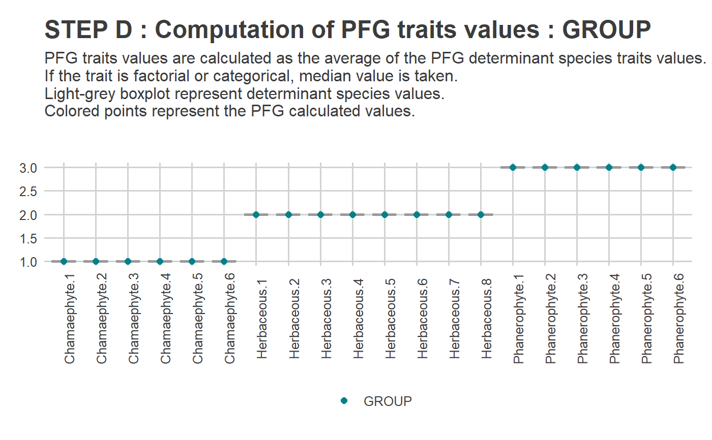
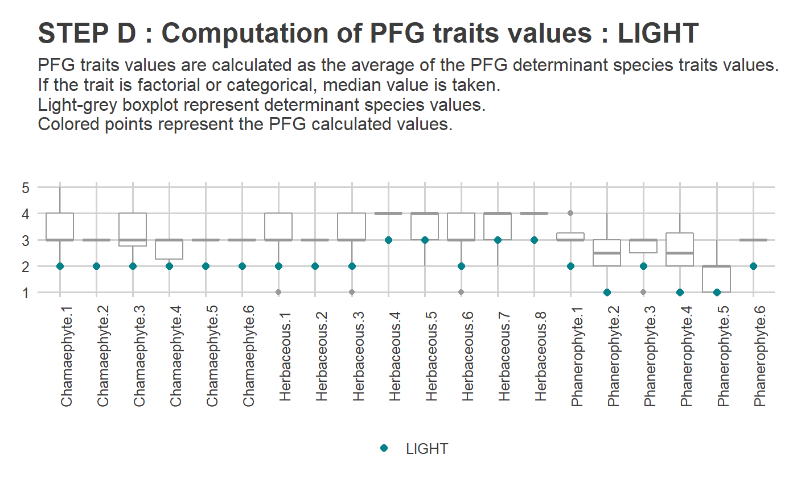
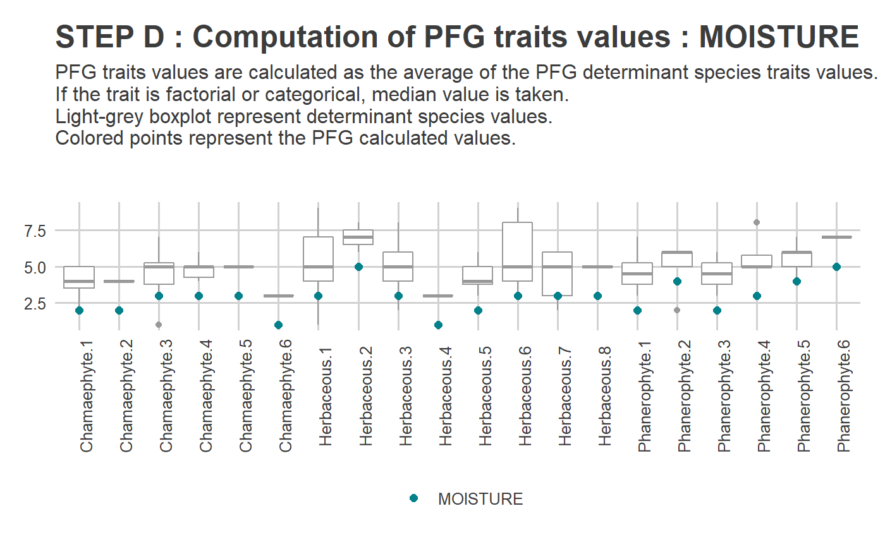
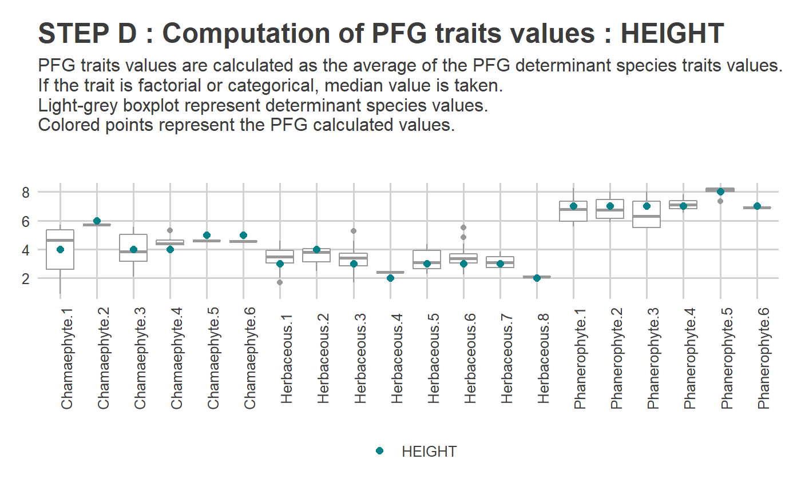
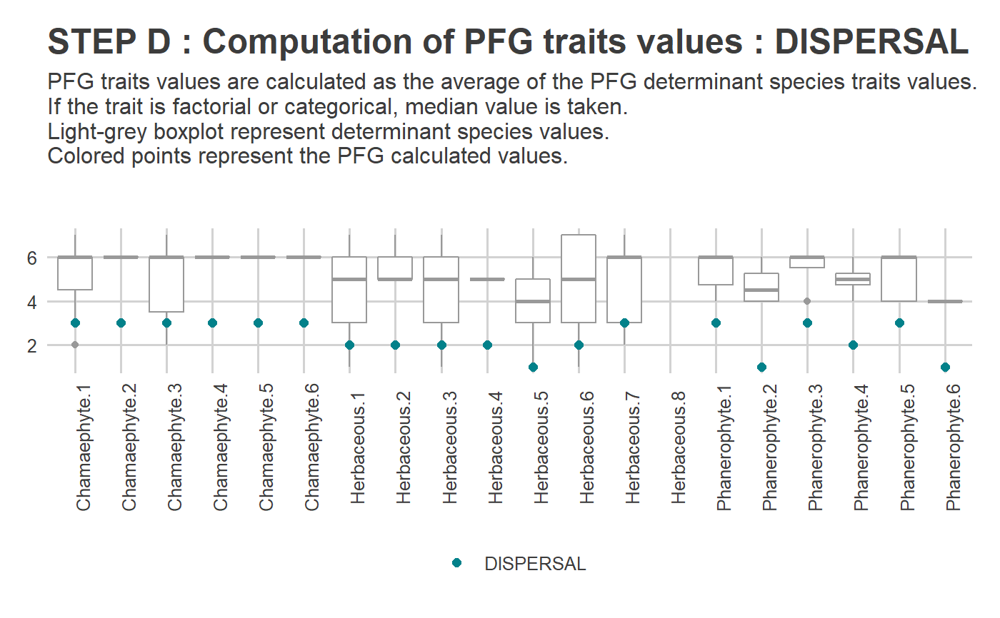
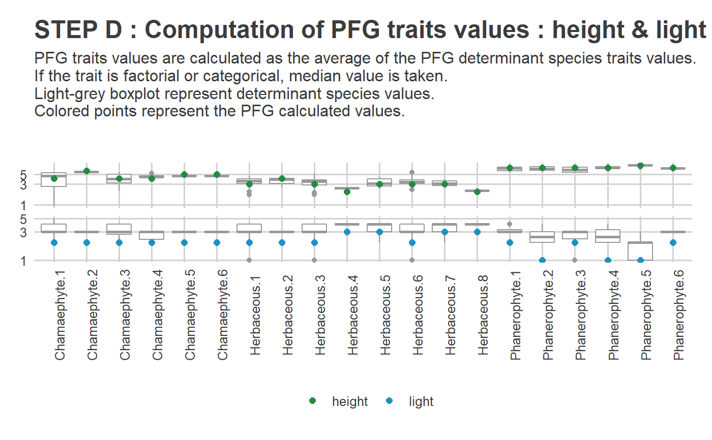
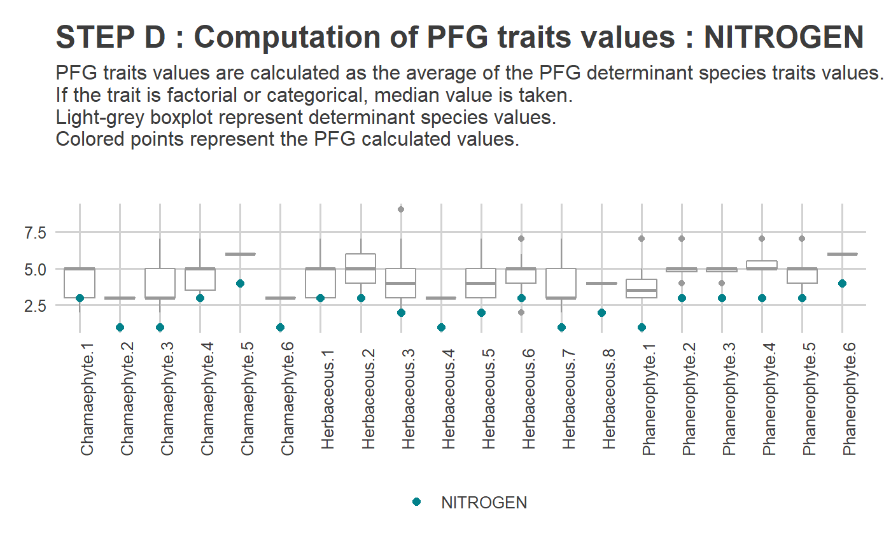

Calculate PFG traits values based on determinant species traits values
Source:R/PRE_FATE.speciesClustering_step3.R
PRE_FATE.speciesClustering_step3.RdThis script is designed to calculate PFG traits values based on determinant species traits values. Either the mean or the median is used depending on the trait class (i.e. numeric or categorical).
PRE_FATE.speciesClustering_step3(mat.traits)
Arguments
| mat.traits | a speciesthe ID of each determinant species (see
PFGthe corresponding Plant Functional Group (see
...one column for each functional trait (see
|
|---|
Value
A list containing one data.frame with the following
columns, and one list with as many ggplot2 objects as
functional traits given in mat.traits :
the concerned plant functional group the number of species contained in this PFG one column for each functional trait, computed as the
PFGno.species...mean (for numeric traits) or the median (for categorical
traits) of the values of the determinant species of this PFG
one for each functional trait, 'specific' cases
excepted (see
...Details)
The information is written in PRE_FATE_PFG_TABLE_traits.csv and
PRE_FATE_CLUSTERING_STEP_3_PFGtraitsValues.pdf files.
This .csv file can be used to build parameter files to run a
FATE simulation (e.g. PRE_FATE.params_PFGsuccession).
Details
This function allows to obtain 'average' functional trait
values for each Plant Functional Group, based on values at the determinant
species level.
A graphic is automatically produced for each functional
trait given, with boxplot representing the values of determinant species,
and colored points the values calculated for each PFG.
However, some traits can have 'specific' representation, as long as their
names within mat.traits match one of the configuration detailed
below :
maturity, longevityto visualize the difference
between these two values, for the maturity time has an impact on the
fecundity of the PFG within FATE (see
CORE module)
If there is NO values for longevity within one PFG, and some
maturity values are available, some values might be inferred as
\(\text{maturity} * 2\). If there is NO values for maturity within
one PFG, and some longevity values are available, some values might be
inferred as \(\text{longevity} / 2\).
height, lightto visualize the PFG light
preference, and help decide and understand the choice of the height
limits of strata in FATE (see
LIGHT
competition module)
soil_contrib, soil_tol_min, soil_tol_maxto visualize the PFG soil preference, and help
parameterize the global parameters of the soil competition module
within FATE (see
SOIL
competition module)
soil_contrib, soil_tolerancesame as the
previous one, but soil_tol_min and soil_tol_max values
are obtained by adding or removing soil_tolerance to
soil_contrib
See also
Examples
## Load example data data(DATASET_Bauges_PFG) ## Species traits tab.traits = DATASET_Bauges_PFG$dom.traits str(tab.traits)#> 'data.frame': 284 obs. of 7 variables: #> $ species : Factor w/ 4457 levels "X1000","X10008",..: 2199 2212 1716 2151 2216 2385 2446 2980 3059 3072 ... #> $ GROUP : chr "Phanerophyte" "Phanerophyte" NA NA ... #> $ DISPERSAL: Ord.factor w/ 7 levels "1"<"2"<"3"<"4"<..: 4 4 3 7 2 1 NA 7 5 3 ... #> $ LIGHT : Ord.factor w/ 5 levels "1"<"2"<"3"<"4"<..: 2 2 NA NA 3 3 NA 3 3 4 ... #> $ NITROGEN : Ord.factor w/ 9 levels "1"<"1.5"<"2"<..: 5 5 5 5 2 7 NA 6 4 3 ... #> $ MOISTURE : Ord.factor w/ 9 levels "1"<"1.5"<"2"<..: 5 6 NA NA 4 6 NA 5 4 3 ... #> $ HEIGHT : num 7.82 7.82 NA NA 3.99 ...#> 'data.frame': 262 obs. of 10 variables: #> $ PFG : chr "Chamaephyte.1" "Chamaephyte.1" "Chamaephyte.1" "Chamaephyte.1" ... #> $ GROUP : chr "Chamaephyte" "Chamaephyte" "Chamaephyte" "Chamaephyte" ... #> $ ID.cluster : chr "1" "1" "1" "1" ... #> $ species : chr "X10559" "X11102" "X11135" "X11354" ... #> $ ID : num 1 2 3 4 5 6 7 8 9 10 ... #> $ sp.mean.dist: num 0.0694 0.0558 0.0758 0.0616 0.0604 ... #> $ allSp.mean : num 0.0814 0.0814 0.0814 0.0814 0.0814 ... #> $ allSp.min : num 0.0403 0.0403 0.0403 0.0403 0.0403 ... #> $ allSp.max : num 0.122 0.122 0.122 0.122 0.122 ... #> $ DETERMINANT : Factor w/ 2 levels "TRUE","FALSE": 1 1 1 1 1 2 1 1 1 1 ...## Merge traits and PFG informations mat.traits = merge(sp.DETERM[, c("species", "PFG")] , tab.traits , by = "species", all.x = TRUE) ## Compute traits per PFG : no specific graphic ---------------------------------------------- sp.PFG = PRE_FATE.speciesClustering_step3(mat.traits = mat.traits)#> #> #> #------------------------------------------------------------# #> # PRE_FATE.speciesClustering_step3 : PFG TRAIT VALUES #> #------------------------------------------------------------##> #>#> #> ---------- PRODUCING PLOT(S) #> #> > GROUP...#> #> > DISPERSAL...#> Warning: Removed 1 rows containing missing values (geom_point).#> #> > LIGHT...#> #> > NITROGEN...#> #> > MOISTURE...#> #> > HEIGHT...#> #> > Done!#> Warning: Removed 1 rows containing missing values (geom_point).names(sp.PFG)#> [1] "tab" "plot"#> 'data.frame': 20 obs. of 8 variables: #> $ PFG : chr "Chamaephyte.1" "Chamaephyte.2" "Chamaephyte.3" "Chamaephyte.4" ... #> $ no.species: int 11 1 8 6 1 1 65 3 92 1 ... #> $ GROUP : chr "Chamaephyte" "Chamaephyte" "Chamaephyte" "Chamaephyte" ... #> $ DISPERSAL : chr "6" "6" "6" "6" ... #> $ LIGHT : chr "3" "3" "3" "3" ... #> $ NITROGEN : chr "3" "2" "2" "3" ... #> $ MOISTURE : chr "2.5" "2.5" "3" "3" ... #> $ HEIGHT : num 4 6 4 4 5 5 3 4 3 2 ...#> [1] "GROUP" "DISPERSAL" "LIGHT" "NITROGEN" "MOISTURE" "HEIGHT"#> Warning: Removed 1 rows containing missing values (geom_point).## Compute traits per PFG : with one specific graphic ---------------------------------------- colnames(mat.traits) = c("species", "PFG", "GROUP", "DISPERSAL" , "light", "NITROGEN", "MOISTURE", "height") sp.PFG = PRE_FATE.speciesClustering_step3(mat.traits = mat.traits)#> #> #> #------------------------------------------------------------# #> # PRE_FATE.speciesClustering_step3 : PFG TRAIT VALUES #> #------------------------------------------------------------##> #>#> #> ---------- PRODUCING PLOT(S) #> #> > Height and light...#> #> > GROUP...#> #> > DISPERSAL...#> Warning: Removed 1 rows containing missing values (geom_point).#> #> > NITROGEN...#> #> > MOISTURE...#> #> > Done!#> Warning: Removed 1 rows containing missing values (geom_point).names(sp.PFG)#> [1] "tab" "plot"#> 'data.frame': 20 obs. of 8 variables: #> $ PFG : chr "Chamaephyte.1" "Chamaephyte.2" "Chamaephyte.3" "Chamaephyte.4" ... #> $ no.species: int 11 1 8 6 1 1 65 3 92 1 ... #> $ GROUP : chr "Chamaephyte" "Chamaephyte" "Chamaephyte" "Chamaephyte" ... #> $ DISPERSAL : chr "6" "6" "6" "6" ... #> $ light : chr "3" "3" "3" "3" ... #> $ NITROGEN : chr "3" "2" "2" "3" ... #> $ MOISTURE : chr "2.5" "2.5" "3" "3" ... #> $ height : num 4 6 4 4 5 5 3 4 3 2 ...#> [1] "height_light" "GROUP" "DISPERSAL" "NITROGEN" "MOISTURE"